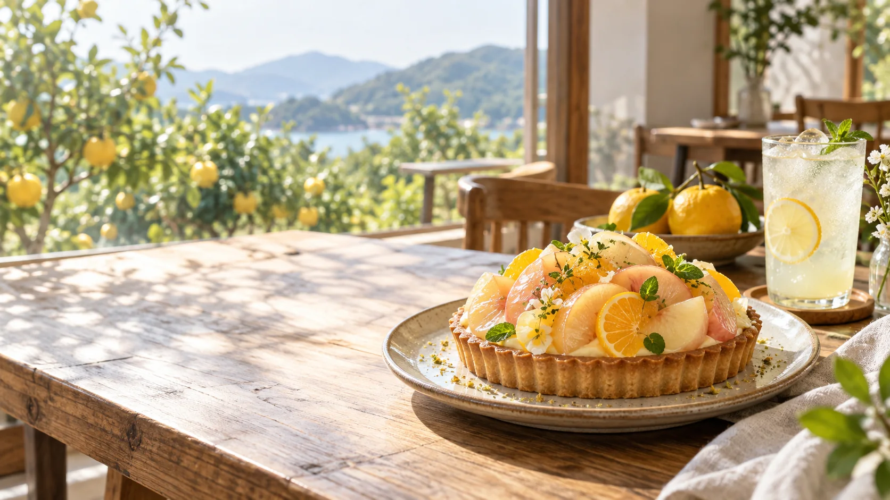

今日はどんな果実の気分ですか。
商品名・価格・原材料は提案用の仮設定です。正式情報の支給後に更新します。
果実のみずみずしさを重ねる、仮メニュー。

焼きたての香りと果実の甘酸っぱさを想定。
果実の色を楽しむ、軽やかな一杯の仮案。
※すべて架空の商品例です。実際の販売、価格、アレルギー情報を示すものではありません。
商品内容は架空の提案例です。正式な原材料・価格・アレルギー情報は実店舗で確認後に掲載します。